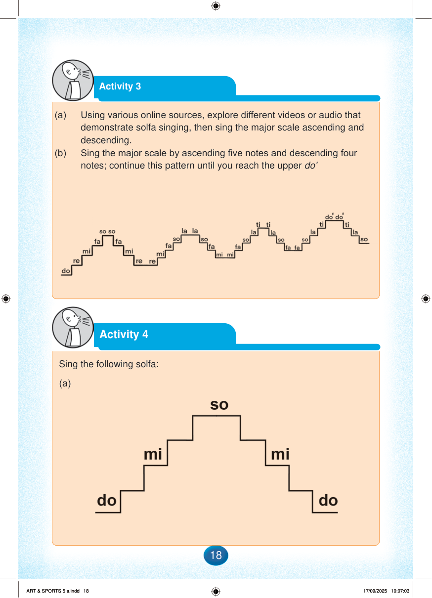

Page background
Activity 3
(a)
Using various online sources, explore different videos or audio that demonstrate solfa singing, then sing the major scale ascending and descending.
(b)
Sing the major scale by ascending five notes and descending four notes; continue this pattern until you reach the upper do'.
Activity 4
Sing the following solfa:
(a)
Page background